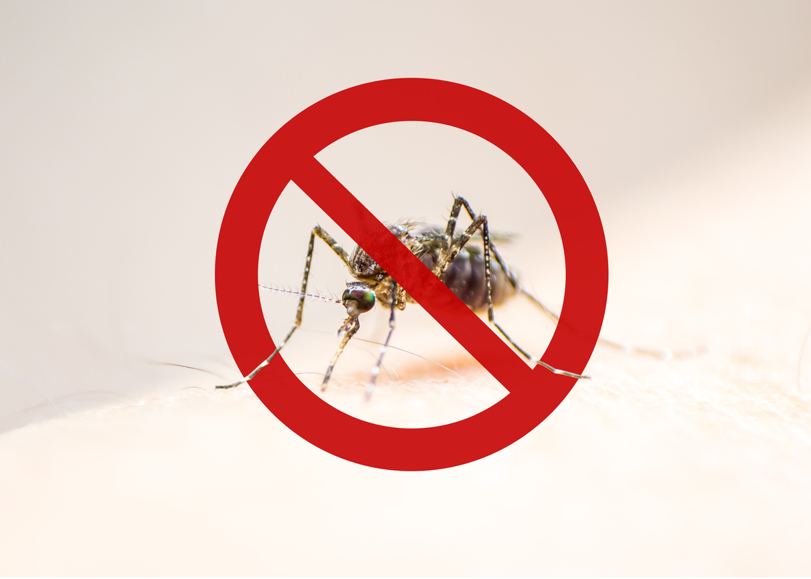

Água parada
Tampinhas, pratos de plantas, calhas, pneus e caixas d'água mal fechadas podem virar criadouros.
Projeto de extensão universitária
A iniciativa aproxima universidade, comunidade e serviços públicos para mapear focos do mosquito, orientar moradores e incentivar denúncias responsáveis.

10 minutos por semana ajudam a eliminar criadouros.
Sobre o projeto
O projeto atua com educação em saúde, visitas orientadas, produção de materiais simples e incentivo ao registro de locais com água parada. A proposta é transformar informação em atitude prática no bairro, na escola, no trabalho e em casa.
As denúncias recebidas ajudam a organizar ações educativas e a indicar pontos que precisam de atenção, sempre com respeito, responsabilidade e proteção dos dados enviados.
O problema
Tampinhas, pratos de plantas, calhas, pneus e caixas d'água mal fechadas podem virar criadouros.
O período quente e chuvoso favorece a reprodução do Aedes aegypti e exige atenção constante.
Quando um foco não é informado, a equipe de prevenção demora mais para chegar ao ponto certo.
Dados e cenário atual
A SES-MG informa que o painel de arboviroses é atualizado toda semana, com dados do Sinan.
O estado reforça que o monitoramento contínuo segue essencial, mesmo quando os números oscilam.
Denúncias e ações educativas ajudam a identificar bairros e imóveis que precisam de orientação.
Dicas de prevenção
Feche caixas d'água, tonéis e reservatórios.
Limpe calhas e descarte folhas acumuladas.
Guarde garrafas e baldes sempre virados para baixo.
Coloque areia nos pratos de plantas.
Descarte pneus, latas e entulho de forma correta.
Receba os agentes de saúde e siga as orientações.
Formulário de denúncia
Envie o endereço aproximado e uma breve descrição pelo formulário oficial do projeto. As informações ajudam a orientar ações educativas e visitas de prevenção.
Denunciar foco de dengueO formulário abre em uma nova aba do Google Forms. Preencha os dados solicitados e envie a denúncia por lá.
Se possível, informe bairro, rua, ponto de referência e o tipo de foco observado.